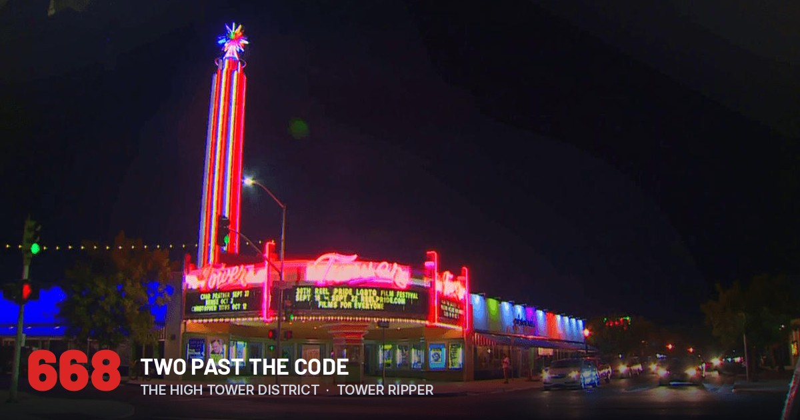
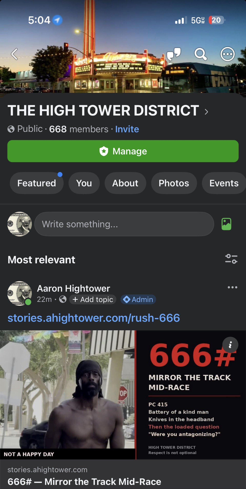
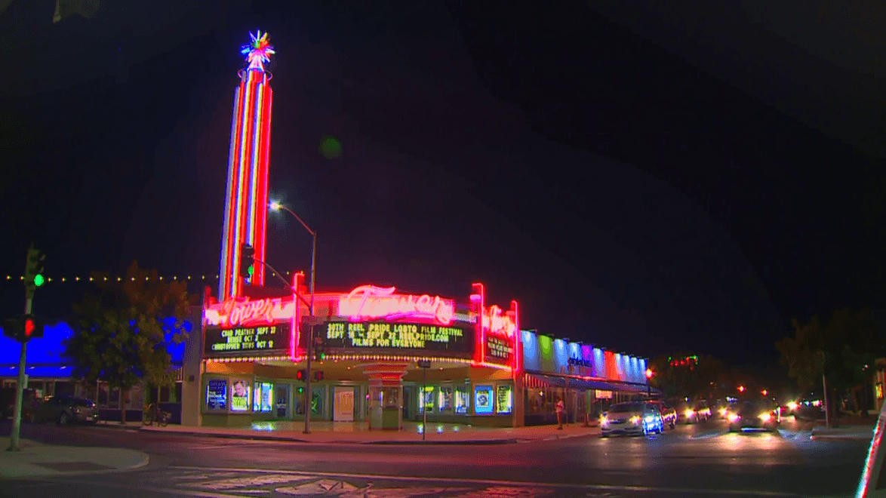

The counter
At 5:04 p.m. on 4 September 2026 the public group read like this. THE HIGH TOWER DISTRICT. Public. 668 members.
Twenty-two minutes earlier the administrator posted the civic record for the downtown walk. The link was stories.ahightower.com/rush-666. The card said 666#. Mirror the Track Mid-Race. PC 415. Battery of a kind man. Knives in the headband. Then the loaded question.
The man who put hands on a kind stranger walked from Fulton toward Van Ness. The administrator who recorded after the contact was not on that walk. He was on the Tower Ripper.

The Tower Ripper
The Tower Ripper is the custom plus-size build that already has its own record in this archive. In 2019 SE Bikes brand manager Todd Lyons shipped $750 retail of Profile Racing hubs to 721 E La Sierra Dr. Front hub $250. Rear hub $500. Awarded for a fully custom Beastmode-platform bike built in the Tower District. The hubs are still on the bike.
Chrome frame. HIGHTOWER and Tower District branding laid down by Driftwell / Jeremy. Single-bungee JBL mount that does not slip under real local riding. Controlled sidewalk wheelies on these blocks since 2019. That is the OG record, not a speech from a councilman about bike lanes destroying streets.
The full parts record, the shipping confirmation, the SE Bikes post, and the RRD Blocks frame are already published.
What 666 was
On a San Francisco Rush 2049 sit-down cabinet, 666# mirrors the entire track while another man is still driving. Left becomes right. The line he paid a coin to learn is now a lie. He has not crashed. The world just flipped under his hands.
That is programmed sadism. Not gore. Just the quiet decision to invert another man's map without asking.
The street version is in the 666# story. A kind man was hit on a public walk. The camera came out after the contact, for identity, in daylight. Then the flip. You cannot record me. Then the loaded question inside the group. Were you antagonizing?
Flip the map. Make the reporter the subject. Make the predator the aggrieved party. 666# for civic life.

Two extra seats
666 would have been a clean omen. Easy to post. Easy to let the number do the talking.
The group did not stop on the omen. It went to 668.
Two extra people after the inverted-track number. Two extra accounts that joined a public crime-watch room in ZIP 93728 and did not need the map flipped in order to stay.
A membership count next to a battery story is not a party hat. It is proof the room did not empty when the map tried to flip. The two extra seats are the point. The code wanted the world mirrored. The membership kept the original line.
What this group actually is
THE HIGH TOWER DISTRICT is a public Facebook group for the streets around the Tower Theatre and the people who live, work, ride, walk, and record here.
- Bands, bikes, eateries, porches, alleys, and the civic record.
- Crime watch without turning the feed into a hunting license.
- No criminal culture as a personality.
- No flipping the map on a witness.
- Admin rights exist so the group does not become the audience the sadist needs.
Six hundred members was the first public mark. 668 arrived on the same day as a battery, a camera from a custom bike, a false claim about recording law, and a loaded question aimed at the administrator.
The work at 668
Document the predator. Name the fallacy when someone tries to flip the map. Keep the group clean. That is the work. It was the work at 80 members. It is the work at 668. It is the same work that put Profile Racing hubs on a Tower District bike in 2019 and kept them there.
The next number will not be magic. 700 will not baptize anyone. 1,000 will not make a loaded question honest. The count is only useful if the original track stays the original track.
If you just joined: read the 666# story. Read the Tower Ripper record. Then look at the sidewalk you actually use. Then decide whether you are here to keep orientation or to enjoy watching someone else lose it.
This is not a request for applause. It is a boundary with a number on it.
Record
- Group
- THE HIGH TOWER DISTRICT
- Status
- Public · 668 members
- Timestamp
- 4 September 2026, 5:04 p.m. PDT
- Position
- Tower Ripper, not on foot Fulton to Van Ness
- Same-day story
- 666# — Mirror the Track Mid-Race
- Place
- Tower District, Fresno · ZIP 93728
- Boundary
- Respect is not optional
Close
The cabinet still takes 666#. Jenny still ends the session with no refund. The street still has no pound key that restores the man who just got hit.
668 means two people past that machine. The admin who posted the number was on the same custom bike that already beat a parts contest on the record. The group that took the number did not take the inverted track.
Keep the track. Do not hit the code on a neighbor who is still driving.
Within the Lord Jesus Christ. Amen.